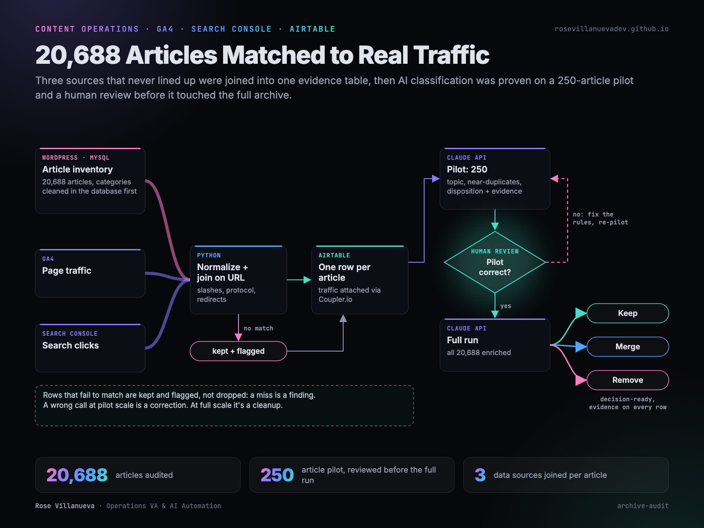

Content audit joining analytics to a 20,688 row inventory
A twenty year archive with duplicate categories, no structure and no traffic data attached, turned into a prioritized plan by joining the full inventory against analytics.

Project scope
20,688 articles accumulated over two decades. Categories had been added ad hoc and duplicated, so the taxonomy described nothing. No article carried traffic data, so nobody could say which pages were earning anything and which were dead weight.
The question being asked was which content to keep, consolidate or remove. It could not be answered, because the evidence to answer it had never been assembled.
Constraints
- Nothing gets deleted without evidence. Some of the oldest pages carry the most search value.
- Too large to review by hand at any realistic rate.
- Classification has to be checkable, since a wrong call at scale is worse than no call.
Approach
- Clean the taxonomy at the database level first, so the inventory is being built on real categories.
- Export the full inventory rather than sampling, because the question is about the tail.
- Join it to analytics so every row carries measured traffic or is provably long tail.
- Classify with a model, but prove the classification on a pilot before running it at scale.
- Put a review gate between the pilot and the full run.
Implementation
The join
The content inventory, GA4 and Search Console are three sources keyed differently. URL normalization has to happen before any of them will match: trailing slashes, protocol, query strings, and the redirects accumulated over twenty years of restructuring. Rows that fail to match are kept and flagged rather than dropped, because a failure to match is itself a finding.
Enrichment
Each article is clustered by topic, checked against near duplicates, and given a disposition. The output is a label plus the evidence behind it, so a decision can be audited later rather than taken on trust.
Pilot and gate
A 250 article pilot ran first, fully enriched, and was reviewed before anything touched the remaining twenty thousand. The gate exists because a classification error at pilot scale is a correction and at full scale is a cleanup.
Result
- Every article carries measured traffic data or is demonstrably long tail, across the full inventory.
- The taxonomy describes the content instead of the history of how it was filed.
- Decisions are backed by evidence attached to the row, not by recollection.
- Classification is proven on 250 articles and gated for review. The full set is enriched but not yet dispositioned.